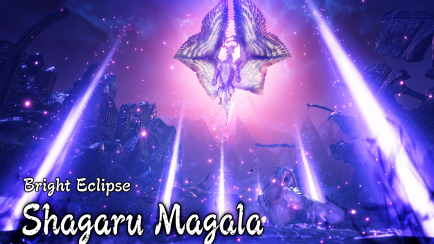

Shagaru Magala

El Shagaru Magala es un Dragón Anciano introducido en Monster Hunter 4. Es la forma adulta del Gore Magala y el jefe final de la historia de la Caravana. En su forma adulta el Shagaru Magala sufre un gran cambio en comparación a su forma juvenil, su piel de color negro es remplazada por fuertes y relucientes escamas doradas, los cuernos y los ojos ya no están ocultos, y su alas rasgadas y con un aspecto andrajoso ahora son unas potentes hojas cubiertas con sus escamas blancas y cuando se abren del todo tienen un aspecto parecido a una estrella.
La forma que adopta Gore Magala cuando madura y muda de piel. Shagaru Magala está cubierto de hermosas escamas centelleantes, y sus alas divinas son suficientemente grandes para envolver todo su cuerpo.Según los escritos, se dice que uno diseminó sus negras escamas a lo largo y ancho de toda una montaña y aniquiló a todas las formas de vida que vivían en la región.Aunque ha alcanzado la madurez, el Shagaru Magala aún posee naturaleza salvaje, y es mucho más calculador a la hora de atacar. Puede dispersar la Cólera por una zona extensa, cubriéndola en completa oscuridad, y es capaz de infectar a todos los monstruos cercanos y hacerlos enloquecer.